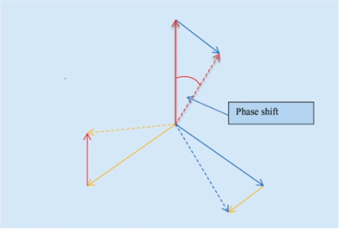
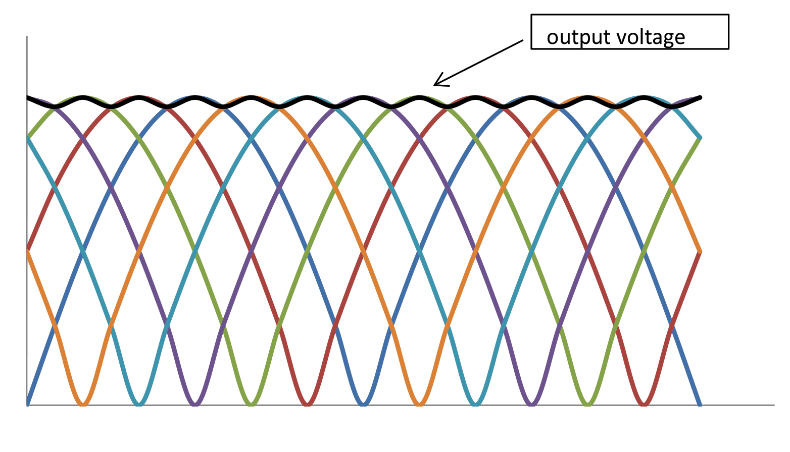
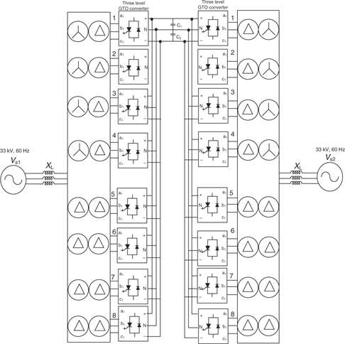

class: center, middle # EE-463 STATIC POWER CONVERSION-I # A Few Important Converters ## Ozan Keysan ## [keysan.me](http://keysan.me) ### Office: C-113 <span class="meta">•</span> Tel: 210 7586 --- ## What's the name of this rectifier? -- <img src="https://upload.wikimedia.org/wikipedia/commons/a/a4/6_phase_half_wave_rectifier.png" alt="Drawing" style="width: 450px;"/> --- ## 6-pulse (Diode or Thyristor) Rectifier <img src="https://upload.wikimedia.org/wikipedia/commons/a/a4/6_phase_half_wave_rectifier.png" alt="Drawing" style="width: 400px;"/> ### Identical to 3-phase full bridge rectifier --- ## What's the name of this rectifier? -- <img src="https://upload.wikimedia.org/wikipedia/commons/6/65/12_pulse_bridge.png" alt="Drawing" style="width: 800px;"/> --- # 12-pulse Rectifier <img src="https://upload.wikimedia.org/wikipedia/commons/6/65/12_pulse_bridge.png" alt="Drawing" style="width: 700px;"/> ### Reading: Power Electronics, Lander, Section 2-9 --- # 12-pulse Rectifier: Source Side <img src="https://d3i71xaburhd42.cloudfront.net/7f7f7bf7b5c7dab61ffc8521e4fa19be2b250172/1-Figure1-1.png" alt="Drawing" style="width: 750px;"/> ## Two secondary windings: Delta and Wye connected --- # How can you obtain 24 pulse, or 48 pulse? -- ##Phase Shifting Transformer --  --- # 12-pulse Rectifier: Devices <img src="https://d3i71xaburhd42.cloudfront.net/7f7f7bf7b5c7dab61ffc8521e4fa19be2b250172/1-Figure1-1.png" alt="Drawing" style="width: 750px;"/> ### What is the rated device voltages compared to output voltage? --- ## 12-pulse Rectifier ## Used in HVDC systems with series devices <img src="https://upload.wikimedia.org/wikipedia/commons/e/ec/12_pulse_bridge_with_thyristor_valves.png" alt="Drawing" style="width: 650px;"/> ### What is the rated device voltages compared to output voltage? --- # 12-pulse Rectifier: Output ## Can you plot the voltage waveform? --  --- # 12-pulse Rectifier: Input -- <img src="http://people.ucalgary.ca/~aknigh/vsd/hp/images/figs/12pulse_line_currents.gif" alt="Drawing" style="width: 800px;"/> --- # What about harmonics? -- - ## 6 pulse: -- 5th, 7th harmonics (no triple harmonics) -- - ## 12 pulse: -- 11th, 13 th harmonics ## \\(h = n * 12 ± 1\\) -- - ## 18 pulse: -- 17th, 19th -- - ## 24 pulse: -- 23rd, 25th --- # What about harmonics? <img src="https://www.yaskawa.com/syndicationAssets/RTEmagicC_CTL1406_WEB_IMG_DEPT_TU2_Harmonics_Siemens-x5_front_end_harmonic_comparison.jpg.jpg" alt="Drawing" style="width: 600px;"/> --- # HVDC Rectifiers --- # How does it look like? <img src="https://upload.wikimedia.org/wikipedia/commons/thumb/0/04/Pole_2_Thyristor_Valve.jpg/1024px-Pole_2_Thyristor_Valve.jpg" alt="Drawing" style="width: 600px;"/> #### 12-pulse thyristor converter for Pole 2 of the HVDC Inter-Island between the [North and South Islands of New Zealand](https://en.wikipedia.org/wiki/HVDC_Inter-Island) (± 350kV). --- # How does it look like? <img src="https://upload.wikimedia.org/wikipedia/commons/thumb/4/43/New_Zealand_HVDC_link_schematic.svg/1280px-New_Zealand_HVDC_link_schematic.svg.png" alt="Drawing" style="width: 600px;"/> #### 12-pulse thyristor converter for Pole 2 of the HVDC Inter-Island between the [North and South Islands of New Zealand](https://en.wikipedia.org/wiki/HVDC_Inter-Island) (± 350kV). --- <img src="https://cached.imagescaler.hbpl.co.uk/resize/scaleWidth/460/cached.offlinehbpl.hbpl.co.uk/news/MPW/WPM_ChinaMap_Sep15THUMB-20150826124159385.gif" alt="Drawing" style="width: 500px;"/> - #### [India's 2000 km HVDC Line](https://www.youtube.com/watch?v=WkLa3O3krCc) - #### [Injecting L-N Fault on HVDC](https://www.youtube.com/shorts/ohv_uzPOvpM), [Fault Injection Method](https://www.youtube.com/watch?v=ZOp1m_5UYAc) - #### [Siemens HVDC](https://www.youtube.com/watch?v=uLKfDjUfor4) - #### [Hitachi HVDC Systems](https://www.saarcenergy.org/wp-content/uploads/2021/06/HVDC-Transmission-Systems_SAARC_May-31.pdf) - #### [Sub-sea Cables](https://www.youtube.com/watch?v=bkgvqC3M1Tw) --- # Even more pulses? -- ## 24 Pulse <img src="https://media.licdn.com/dms/image/D5612AQHL3O9rPMM8Pg/article-cover_image-shrink_423_752/0/1675929362238?e=1706140800&v=beta&t=k5L7q_wJmv3fJuKHqo9wLqGzrA4aKHA8EVuu2e8SGnk" alt="Drawing" style="width: 800px;"/> --- # Even more pulses? ## 24 Pulse <img src="https://www.researchgate.net/publication/262545261/figure/fig4/AS:296836033204225@1447782633033/System-connection-diagram.png" alt="Drawing" style="width: 500px;"/> --- # Even more pulses? ## 48 Pulse  --- # Frequency Conversion: -- # Cycloconverters -- ### Converts AC to (lower frequency) AC -- ### No need to have DC-link -- ### Used in MW-sized motor drives (ships, mines, traction) - ### [ABB Brochure](https://library.e.abb.com/public/2abc426982e203e6c1256e4d004deb49/ACS%206000c%20Cycloconverter.pdf), [discontinued](http://www.mena.abb.com/industries/db0003db002811/214b39527235c875c1257b270083a382.aspx) - ### [Siemens Sinamics](https://new.siemens.com/global/en/products/drives/sinamics.html) ### Reading: Power Electronics, Lander, Chapter 5 --- # Cycloconverters -- ## Simplest Case ### Single Phase to Single Phase <img src="https://www.electrical4u.com/images/2017/january/1485787482.PNG" alt="Drawing" style="width: 700px;"/> --- # Cycloconverters ## Simplest Case ### Single Phase to Single Phase <img src="https://www.electrical4u.com/images/2017/january/1485787784.PNG" alt="Drawing" style="width: 600px;"/> --- # Cycloconverters ### Three Phase to Single Phase <img src="https://www.electrical4u.com/images/2017/january/1485788659.PNG" alt="Drawing" style="width: 700px;"/> --- # Cycloconverters ### Three Phase to Single Phase (with 6 pulse) <img src="./images/ee463/cycloconverter_6pulse.png" alt="Drawing" style="width: 800px;"/> --- # Cycloconverters ### Three Phase to Single Phase (with 12 pulse) <img src="./images/ee463/cycloconverter_12pulse.png" alt="Drawing" style="width: 800px;"/> --- # Cycloconverters ### Three Phase to Three Phase (6 pulse) <img src="https://www.electrical4u.com/images/2017/january/1485789305.PNG" alt="Drawing" style="width: 500px;"/> --- # Cycloconverters ### Three Phase to Three Phase (12 Pulse!) <img src="./images/ee463/12pulse_3ph.png" alt="Drawing" style="width: 800px;"/> --- ## You can download this presentation from: [keysan.me/ee463](http://keysan.me/ee463)